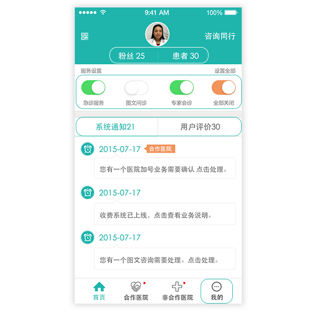

欢迎使用“专家号”专家版！更新后的“专家号”专家版为您提供了更强大的功能：除了进行服务设置外，还可免费向平台上其他同行专家问诊或业务讨论。由于平台现拥有线下合作医院，系统将合作医院和非合作医院订单区分开来，以便您及时处理。页面底部四大功能区，分别是“首页”、“合作医院”、“非合作医院”和“我的”。针对非合作医院患者，您可为患者提供多项服务：“图文问诊”、“加号面诊”、“电话问诊”、“加急电话”、“视频问诊”和“专家会诊”。针对合作医院患者，您可直接为其提供以上服务，也可接受其主治医师的同行咨询、会诊邀请、手术邀请、坐诊邀请等。是否开启某项服务、收费价格，由您在“服务设置”中自行确定。
一、首页

1、点击右上角“咨询同行”：您可免费向平台上其他同行专家问诊或进行业务讨论。
2、头像下方，点击“粉丝”可对您的粉丝进行管理；点击“患者”可与您的患者进行沟通。
3、在服务设置区，通过“急诊服务”等四个服务按钮，可对部分服务进行快捷设置（服务开启/关闭，服务价格设置等），所有服务也可在“我的”下“服务设置”中实现。
4、首页中部“系统通知”：“系统通知”是所有订单提示消息（如：新问诊、加号等），点击提示消息，可跳转到订单处理页面。其中，来自合作医院的订单将突出显示。
一、合作医院
点击“合作医院”，您可处理来自合作医院的各类订单（有的来自患者，有的来自合作医院医生）。所有订单被划分为已完成和未完成两类。
为合作医院患者或医生提供服务，您不仅可获得更高补贴（各项服务的补贴和收费标准，请详见“我的”——“服务设置”下的说明），还可能被邀请到该院驻场坐诊或手术。
您对合作医院患者可提供的服务有：专家会诊、电话问诊、加急电话、视频问诊、加号面诊。其中，专家会诊，是患者、患者的主治医生和您三方共同参与的图文问诊；其他几项服务与非合作医院患者一致。
您对合作医院的医生可提供的服务有：同行咨询、专家手术、专家坐诊、视频会诊。同行咨询，是合作医院医生向您进行图文咨询；专家手术，是合作医院医生邀请您去该院驻场手术；专家坐诊，是合作医院医生邀请您去该院驻场坐诊；视频会诊，是合作医院医生就某患者病情与您进行视频会诊。
三、非合作医院
点击“非合作医院”，您可处理非合作医院患者的各类订单，为其提供各项服务，包括：图文问诊、加号面诊、电话问诊、加急电话、视频问诊、专家会诊。
1. 图文问诊
在此接收和回复患者消息,您不仅可用文字，也可语音回复（点击对话框左侧小喇叭按钮）。在问诊中心下方，点击对话框右侧按钮，出现三种选项：图片（可上传图片）、常用语录（设置常用回复语）、结束咨询。
2. 加号面诊
显示患者预约的加号服务订单，点击订单详情页右上角“病历”，可看到患者详细病情，可据此在页面底部选择“同意加号”、“拒绝加号”或“修改时间”（若患者选择的加号日期您无法出诊，可为患者重新分配加号时间，请提供3个以上时间段，以便患者选择。）
3. 电话问诊
显示患者申请的电话服务订单，订单详情页右上角为“病历”按钮，可看到患者个人信息及病情资料。可据此在页面底部选择“同意”或“拒绝”。
4. 加急电话
5. 视频问诊
是患者通过视频向您问诊。您同意订单后，“专家号”客服会和您联系，约定您和患者的视频通话时间，您需在约定时间向患者发起视频通话。视频通话超出患者预设时长后将自动挂断。如有中断，请您重新开始发起视频，系统将累计计时。此项服务需开启手机摄像头和声音，并确保网络通畅。
6. 专家会诊
患者选择至少两名专家对病情进行共同诊治，并选定其中一名为首诊专家。首诊专家发起和组织会诊，将会诊结果整理后发送给患者；辅诊专家只需参与讨论，提出专业意见。会诊对话有两种状态：“医患沟通”状态（含患者）和“专家讨论”状态（不含患者）。
首诊专家操作流程：
第一步，在所有辅诊专家同意后，点击“开始会诊”发起会诊
第二步，在“医患沟通”状态中，组织辅诊专家向患者详细了解病情。与患者充分沟通后，点击右上角 按钮进入“对话记录”页面，选择“专家讨论”，医患沟通暂停。
第三步，在“专家讨论”状态中，组织辅诊专家讨论病情，得出结论。
第四步，点击右上角 按钮进入“对话记录”页面，回到“医患沟通”状态，将讨论结果整理后发送给患者。
第五步，如患者接受首轮会诊结果，点击“完成”，本次问诊结束；如患者对结果有疑异并继续提问，再重复上述流程。第二轮结果提交后，本次会诊自动结束。
辅诊专家操作流程：
第一步，在首诊专家发起会诊后，自动进入“医患沟通”状态，向患者了解病情。
第二步，自动随首诊专家切换到“专家讨论”状态中，讨论病情，提出专业意见。
第三步，随首诊专家切换到“医患沟通”状态，等待患者对诊断结果的反馈，如患者接受首轮会诊结果，首诊专家结束问诊；如患者请求第二轮问诊，则随首诊专家重复上述流程。第二轮结果提交后，本次问诊自动结束。
提示：由于会诊涉及专家较多，系统提供了@提醒功能。当有人@您时，是提醒您发言；您也可@别人，提醒ta发言。会诊中，您也会接到提醒短信或电话。
四、我的
个人资料：填写个人资料及常用门诊地点。
我的账户：展示各项服务收入情况。
诊断记录：查看所有患者接诊记录。
我问同行：可看到您跟同行的线上沟通记录。
患者评价：查看患者对问诊过程的评价。
服务设置：对各项服务进行开启/关闭和服务价格设置，设置完成后点右上角“保存”，服务设置生效。
分享：可将“专家号”分享给您的同行。